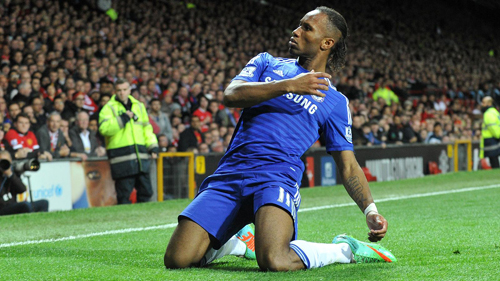

Information about football Player
A soccer player, also known as a player for short, is a sports athlete who plays the sport of soccer as well as different types of football such as beach soccer, indoor soccer, mini soccer, street football,... It is estimated that there are more than 250 million soccer players in the world[1] and many play other forms of football.
-

C.Ronaldo
Cristiano Ronaldo dos Santos Aveiro GOIH ComM is a Portuguese professional footballer who plays as a forward for English club Manchester United and is the captain of the Portugal national football team.
-

Messi
Lionel Andrés Messi, also known as Leo Messi, is an Argentine professional footballer who plays as a forward for club Paris Saint-Germain and is the captain of the Argentina national football team.
-

Drogba
Didier Drogba,is a former Ivorian footballer who played as a forward. He was the Premier League's top scorer in 2006–07 with 20 goals and in 2009–10 with 29 goals, and was African Player of the Year in 2006 and 2009.